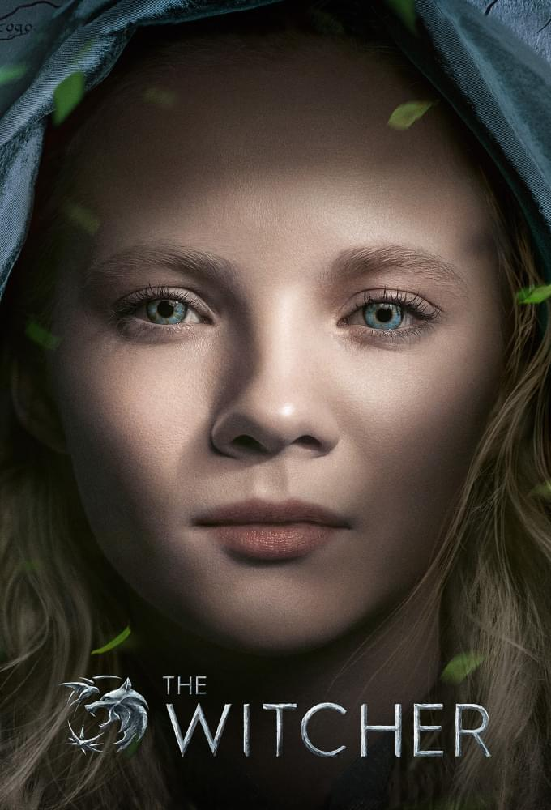

Personagens
Yennefer de Vengerberg, conhecida como Yennefer, é uma personagem central na série de livros "The Witcher", escrita por Andrzej Sapkowski, e também desempenha um papel significativo nos jogos de vídeo game e na série de televisão baseada na obra. Sem entrar em detalhes de spoilers, aqui está um resumo geral de Yennefer: Yennefer é uma feiticeira altamente talentosa e complexa, conhecida por sua beleza, habilidades mágicas excepcionais e personalidade intrigante. Sua história é marcada por desafios pessoais e escolhas difíceis que moldam sua jornada ao longo do tempo. Yennefer é caracterizada por sua determinação, inteligência afiada e, ao mesmo tempo, por sua vulnerabilidade. Seu relacionamento com Geralt de Rívia, o protagonista da série, é uma parte essencial da narrativa e é explorado em profundidade ao longo da história. Ao longo da saga, Yennefer desafia estereótipos tradicionais de feiticeiras em seu papel complexo no universo de "The Witcher". Seu passado misterioso, suas aspirações e seu desenvolvimento como personagem contribuem para a riqueza da trama e para a compreensão do mundo complexo e cheio de nuances criado por Sapkowski. Na adaptação para a série de televisão, Yennefer é interpretada por atrizes como Anya Chalotra. A representação de Yennefer na televisão recebeu elogios pela profundidade e nuances trazidas à personagem. Sua presença impactante e sua evolução ao longo da série adicionam camadas emocionais à narrativa, tornando-a uma figura inesquecível no universo de "The Witcher".
Ciri é uma princesa de Cintra com uma linhagem especial que a concede habilidades mágicas extraordinárias. Seu destino está entrelaçado com eventos de grande importância no mundo de "The Witcher". Ao longo da narrativa, Ciri é caracterizada por sua coragem, resiliência e curiosidade em meio a um cenário de guerra, magia e intriga política. A história de Ciri é marcada por sua busca por identidade e propósito. Ela é uma peça-chave em uma profecia antiga e é perseguida por várias facções que desejam controlar seu poder. Sua ligação com Geralt de Rívia, o protagonista da série, é central para a trama e adiciona uma dimensão emocional significativa à história. Ciri é uma personagem multifacetada, evoluindo de uma jovem princesa a uma guerreira formidável. Sua jornada é repleta de desafios, encontros memoráveis e descobertas sobre seu próprio passado. Ao longo dos eventos da saga, Ciri torna-se um elemento fundamental na exploração dos temas de destino, livre arbítrio e as complexidades do mundo em que vive. Na série de televisão, Ciri é interpretada por atrizes como Freya Allan. Sua representação na tela recebeu elogios por capturar a essência da personagem, desde sua inocência inicial até sua maturidade posterior. A presença de Ciri enriquece a trama, adicionando uma dimensão única ao universo de "The Witcher".
